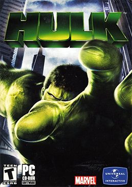

The Hulk (PC)



(Universal Games)
The latest of the classic comic-book heroes to reach the big screen, director Ang Lee’s vision of The Hulk was a stunning cinematic experience: an ode to the repressed emotions that lie dormant within us all, both brooding and furious. While a video game spin-off was inevitable, The Hulk has fortunately delivered far more than we are used to from typical movie crossovers, actually doing the license justice. In line with the values and ideals of the big angry man himself, The Hulk is a straight down the line no-bullshit action game, full to the brim with furious action and chaotic mayhem. Many PC gamers have been dreaming of unleashing wanton destruction upon the world since the game was released on the major consoles, and now thankfully they are finally free to satisfy their anti-social desires. So, let’s get smashing…
With the game’s protagonist being driven by the simple motivation of wrecking absolutely everything that crosses his path, most of your time in The Hulk is spent reigning intense pain upon anything that isn’t you. Make no mistake, The Hulk offers some seriously brutal gameplay. There are endless waves of soldiers to wail on, and the screen literally shakes each time you dish out a massive blow. The action is delivered with such an intensity of effect that you’re left reeling from it all. In traditional beat-em-up style the Hulk has been imbued with many different ways to wreak havoc, with around 30 different combat moves at his disposal to dispense his own unique brand of mayhem. Annoyed by that pesky marine peppering you with machine-gun fire? Pick him up and smash him against the wall, then lob his lifeless body into one of the marines that have come to replace him.
Accompanying all of this uncompromisingly brutal gameplay is the fact that The Hulk features totally destructible environments, which is complimented further by a realistic physics system for all of the smashing and debris throwing. Absolutely everything can be smashed and wrecked: the Hulk can punch holes through walls, effortlessly break windows and furniture, pick up parked cars and smashed stone pillars and hurl them at his enemies, and even leaves craters in his wake when he jumps around. The environment gets progressively smashed up as you fight, and better yet, virtually anything can be picked up and wielded as a tool of destruction. You get a real sense of the Hulk’s power as you crash your way through the levels, and there is something surprisingly cathartic about ripping a steel pipe out of the ground and throttling a defenceless soldier with it. There is much fun to be had dishing out pain using smashed up parts of your surroundings, and rest assured, the game offers you plenty of opportunities to pick up debris and throw it forcefully at your enemies.
Beyond the fun of the endless havoc and destruction, The Hulk’s visuals are one of the game’s most striking and inspired aspects. Cartoonish cel-shading techniques are used to depict the excellently animated Hulk, while more traditional 3D graphics are used to render the rest of the environments. Everything retains a very strong comic-book feel however, and the developers should be congratulated for shunning realistic visuals and adopting a stylised approach more in tune with the Hulk’s origins. The dynamic camera angles also suit the action well, comfortably shifting around to allow a more cinematic view of the mayhem. With the camera gracefully panning around as the Hulk grabs a soldier off the ground, the gamer has the option of either simply smacking the living daylights out of him, brutally smashing him into the ground, or hurling his body forcefully into the wall. Lovely.
While there’s no doubt that The Hulk makes for a smashing great time, the game is let down in a big way by the uninspired stealth sections. I’ve never been much of a fan of sneak-em-ups, and things haven’t really changed with this game. The stealth mechanics are simplistic to say the least, and contrary to the action sequences, the ‘intelligent’ camera angles prevent you from ever seeing what the hell is going on. While it can be appreciated that the developers had the intention of breaking up the monotony, the fact remains that they should have implemented the stealth properly rather than this half-assed attempt. For this reason The Hulk is a seriously flawed game, and the frustration found in these levels just makes you want to hulk-out and smash everything.
In the end, The Hulk is quite a simplistic affair that doesn’t really offer a lot of long-term value. For the most part the gameplay consists of smashing, smashing, and then a little more smashing. Sometimes the smashing becomes a little monotonous. But what exactly did anyone expect from a game based on the Incredible Hulk anyway – high drama and deep strategy? While The Hulk may lack depth it certainly delivers on many other levels, making for a great console game for PC gamers to load up when the 9-5 grind just becomes too much. The Hulk allows you to release your id from your subconscious mind in an orgy of chaotic violence and destruction - and for this PC gamer that was more than enough to warrant the purchase. Now if you’ll excuse me, there’s a wall over there that I feel the urge to punch a hole in…
Rating:
[rating graphic not preserved] for your average gamer, and…
[rating graphic not preserved] for all of the borderline psychotics out there.